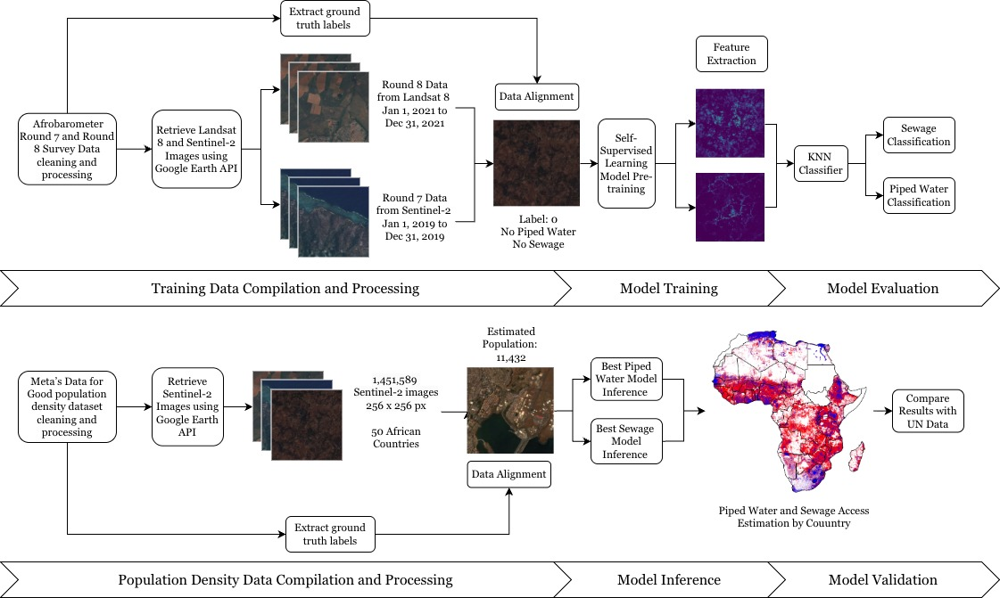

Monitoring Access to Piped Water and Sanitation Infrastructure In Africa at Disaggregated Scales using Satellite Imagery and Self Supervised Learning
*Equal contribution | † Corresponding author
1 McGill University | 2 Mila - AI Quebec Institute | 3 Columbia University | 4 Duke Kunshan University

Pipeline overview for satellite-based SDG 6 monitoring.
Abstract
Tracking access to safely managed drinking water and sanitation (SDG 6) is hindered in many regions by sparse, costly, or delayed survey and census data. We propose a remote-sensing framework that pairs household survey labels with Sentinel-2 satellite imagery (Drusch et al., 2012) and self-supervised Vision Transformer embeddings to learn representations of the built environment without dense task-specific labels. We evaluate a k-NN classifier on frozen embeddings to predict (i) piped water access and (ii) sanitation/sewage access at survey locations, and use high-resolution population maps to produce population-weighted national estimates. On held-out validation splits, our best configurations reach 84.19% accuracy for piped water and 87.17% accuracy for sanitation.
BibTeX
@article{echchabi2025sdg6,
title = {Tracking Progress Towards Sustainable Development Goal 6 Using Satellite Imagery},
author = {Echchabi, Othmane and Lahlou, Aya and Talty, Nizar and Manto, Josh Malcolm and Zheng, Tongshu and Lam, Ka Leung},
journal = {arXiv preprint arXiv:2411.19093},
year = {2025}
}
Acknowledgements
We thank our collaborators and partner institutions at DKU and Columbia for their support and feedback.